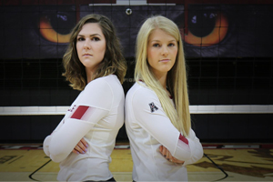

Setting the Tone

Even casual sports fans know the impact of a good quarterback on a football
team or a good point guard on a basketball team. However, most casual sports fans would probably
overlook the setter position in volleyball.
Outside hitters that rack up kills get noticed. Middles throwing down huge
blocks get noticed. Liberos making diving digs get noticed. But the setters that are involved in
every play? They get overlooked.
Maybe it's the name of the position. On most professional rosters in Europe,
the setter position is called the quarterback. That's probably a better term for what setters do
in volleyball.
But unlike star quarterbacks and star point guards, what often defines their
position, is being okay with being overlooked.
Temple Associate Head Coach and Recruiting Coordinator, Akiko Hatekeyama,
actually looks for players like this when the staff is recruiting future setters.
"I look for physicality on the floor and rhythm and the technical aspect, I'm
pretty picky about that," she explained. "But at the same time, I'm looking for personality
characteristics, if she's attention seeking or needs the spotlight, you can sense that vibe.
"I look for signs that the setter is a team player. Is she all about herself,
or is she doing everything she can to help her teammates? With a good setter, you never notice
when they're having a bad day."
Temple has a pair of talented "quarterbacks" on the squad in seniorHannah
Vandegriftand freshmanTyler Lindgren. The duo splits rotations, with their stats virtually
identical – Vandegrift has averaged 5.30 assists per set, while Lindgren is at 5.04 per frame.
Vandegrift, Lindgren, and Hatekeyama, who was an All-District setter for Temple
that later played professionally, all started their careers at setter and have never played
anywhere else. And like fans that can sometimes overlook the position in favor of the more
exciting ones, often times kids starting out in the sport would rather be hitters. So it's up to
coaches recognizing their potential early or simply their physical characteristics to get
started at setter.
At 12, Vandegrift's coach told her she had "good hands," so she was told that's
what her position would be. At nine, Lindgren was too small to serve the ball overhand from the
10-foot line, so she said setter was about all she could play physically. It didn't hurt that
her aunt and coach, Trisha (Lindgren) Kroll, was a setter for Kansas that recorded over 1,000
career assists.
Hatekeyama was the opposite height-wise compared to Lindgren -- she stood tall
for Japanese standards. However, when asked what position she wanted to play, she wasn't enticed
by any of the hitting positions, but was intrigued about what the student managers were doing
around the court - setting up the nets, taking stats, etc. So early on, her coach told her that
she could be a successful setter and he'd train her as one.
"Maybe that's one of the characteristics that my coach saw in me," said
Hatekeyama. "I never needed the attention or spotlight."
It didn't matter how they started as setters, though, they all grew to love the
position, despite it not coming with the same glory as some of the other positions.
"I like the strategy behind the position," noted Lindgren. "I don't need the
attention of a kill, that's not why I like the game. I'd rather put my hitters in the best
position to get the kill, I don't need the praise."
The setter position is a perfect combination of physical and technical. Not
only your own physical and technical abilities, your hitters' abilities as well. A good setter
has athleticism, ball handling ability, game strategy, and leadership in their repertoire.
When the ball is served or crosses the net, the setter is the second touch and
the touch that leads to the attack. The defense receives or digs the ball, the setter perfectly
puts it up for the hitter she wants to attack, and the hitter swings for the kill.
Whether it's Vandegrift or Lindgren on the court, the setter is the primary
play caller for the Owls. Before a serve, they will indicate to their hitters what play they're
calling, and execute it once the serve comes.
Hatekeyama, Temple's setting coach, lets her setters run their game. "I try not
to overdo it. They create the offense and feel out the plays in the crucial moment. I give some
advice and feedback, like this person is having a great day, or there's a big blocker here, but
for the most part, they make these decisions."
Part of the decision making that goes into play calling forces setters to have
to memorize two scouting reports - the opponent and their own team. Each of Temple's hitters has
different needs for the kind of sets she gets, and it's up to the setter to deliver.
"Setters have to know the sets and the system and individual preferences for
the hitters," explained Lindgren. "On a brand new team, I needed a lot of feedback at first. But
now, we're making a lot better connections."
As a senior, Vandegrift has helped Lindgren learn the preferences for her
hitters and still helps give advice, reassurances, and feedback to her rookie counterpart.
"Anytime we come off, I go over to her immediately," said Vandegrift. "Even
when she's doing great, I just try to let her know that she's making good decisions, and she's
doing a good job."
Teams designate captains for the season, but on court, each setter is the
captain of the offense. They need to keep the team balanced and mentally in the match, whether
or not points go their way.
"Setters make the calls, they make the plays, we make sure everyone knows what
they're doing at all times," said Vandegrift.
The weight ofthe game is sometimes on the setters' backs, or hands that is.
They provide the spark when the team needs more energy or the calming influence when the team
has too much energy.
"A setter needs to be a lot of things sometimes," explained Hatekeyama. "They
take all the responsibility and all the blame, but they also have to be a motivator. Everyone
looks at the setter every single play or every single rally, so they need to be emotionally
consistent all the time."
The next time you watch a Temple volleyball match, pay special attention to the
setters. Not because they want or need it, but because they deserve it.